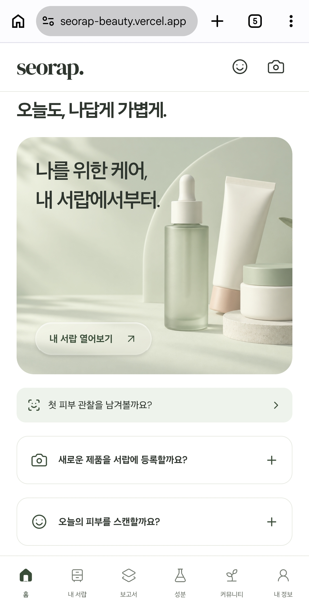
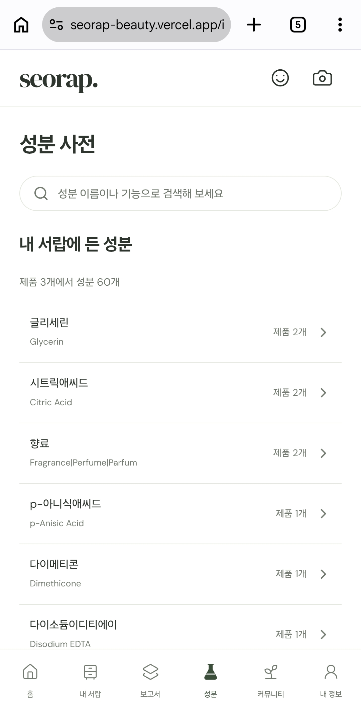
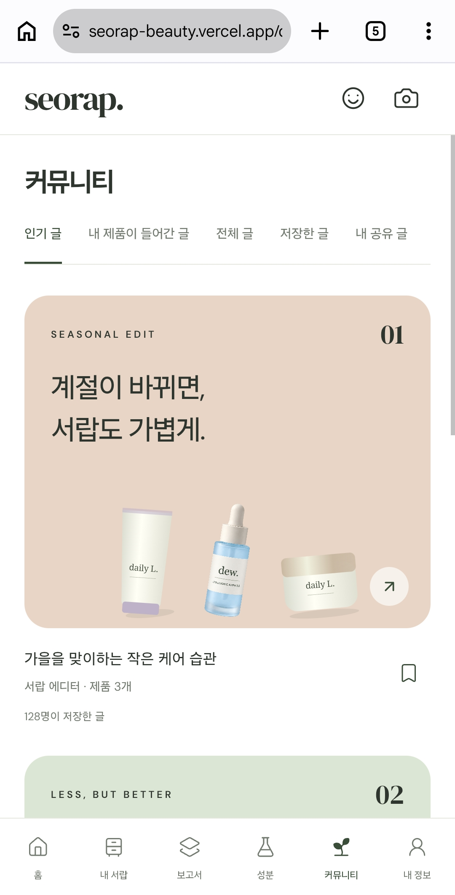
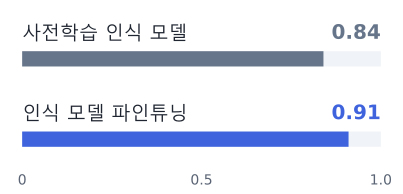
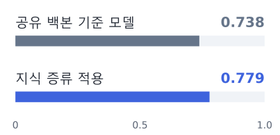
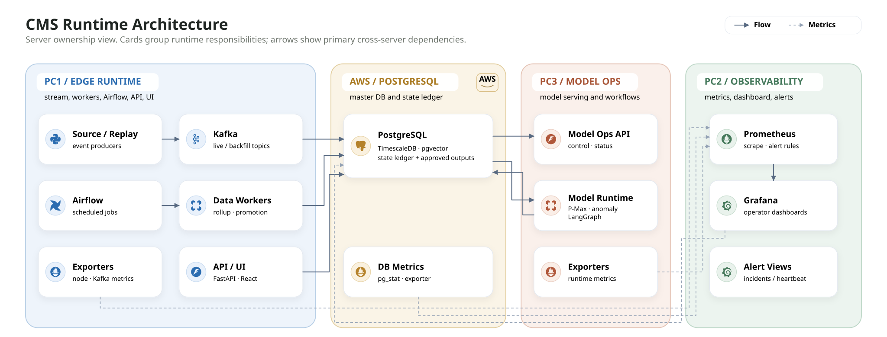
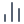
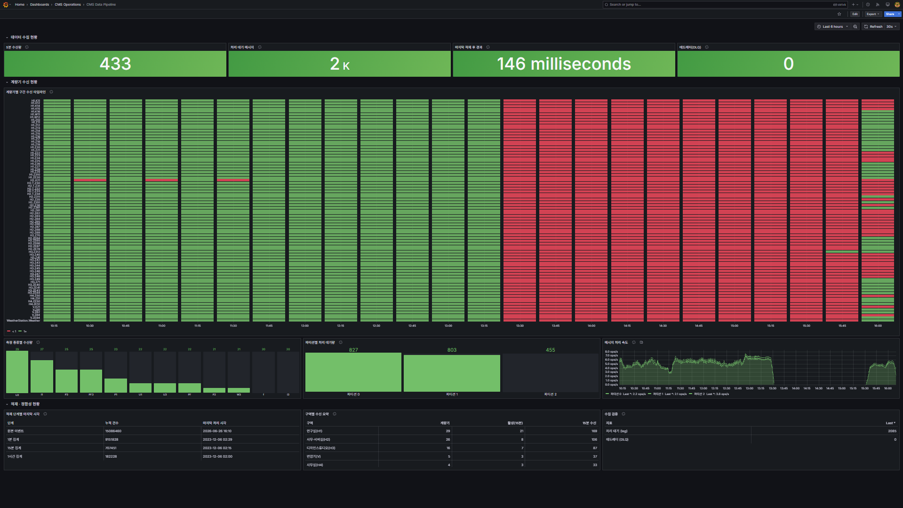

최우수상 2위
제1회 KODATA × BDAI AI·데이터 금융 아이디어 공모전
팀 ‘代잇다’ · 후계자 부재에 따른 중소기업 승계 위험 지수 K-SRI 제안
Portfolio · Product Engineer · Backend · Data
사용자 문제를 정의하고 서비스 · 데이터를 설계하는 Product Engineer
뷰티 제품 관리 서비스를 기획하고 백엔드를 구현했습니다. 에너지 데이터 수집·검증 파이프라인을 설계·구현했습니다.
2024.07~
2026.06 수료
2027.02 졸업 예정
팀 ‘代잇다’ · 후계자 부재에 따른 중소기업 승계 위험 지수 K-SRI 제안
크래프톤 × CJ올리브영 공동 주최
웰니스 기획전 제작 자동화 MVP 설계·구현
뷰티 제품·루틴 관리
화장품 패키지의 한국어 인식 모델을 학습하고, 같은 검출기·입력 조건에서 성분명 복원 성능을 비교했습니다.
동일한 스튜디오 사진 200장 중 전성분 정답이 있는 105장 평균 · 학습·평가 제품 분리에너지 데이터 플랫폼
원본 이벤트·처리 정책·집계 결과를 분리하고, 승인된 관측값을 별도 스키마에 저장했습니다.
과거 데이터 재생 기반 · DB 설계·수집 파이프라인 담당웰니스 기획전 자동화
AI 에이전트의 병렬 작업과 독립 검토, 단계별 검증·커밋으로 구현을 진행했습니다.
상품 큐레이션·문구 생성·운영자 검토·발행보유 제품의 역할·전성분·사용 평가를 통합해 제품 비교와 루틴 관리를 지원합니다.
PythonFastAPIPostgreSQLPyTorchPaddleOCRGoogle VisionReact Native / ExpoTypeScript




매장 상담과 개인의 루틴 관리에서 발견한 불편을 시장 조사와 대조했습니다. 보유 제품 정리·루틴 간소화·뷰티와 건강 제품 통합 관리의 세 유형으로 고객 요구를 구분했습니다.
기획 단계의 고객 가설
낮게 평가한 제품의 공통 성분과 같은 역할의 대체 제품을 비교합니다.
긍정 평가한 제품을 기준으로 역할이 겹치는 제품을 비교합니다.
계절별 관리 목적에 맞는 역할과 보유 제품을 확인합니다.
구매 후보와 보유 제품의 역할·성분을 대조합니다.
개봉일과 남은 사용 기한을 기준으로 보유 제품을 정리합니다.
situation → sectionOrder
피부 스캔은 항목별 등급 일치도와 모델 크기를, OCR은 전성분 정규화 성능과 제품 등록 대기를 기준으로 평가했습니다.
OCR 전용 엔진과 시각 언어 모델을 비교했습니다. 입력 해상도·검출기·인식기를 바꾸며 성분명 복원 성능을 평가했습니다.
비교 모델 PaddleOCR · HunyuanOCR-1.5 · Qwen3-VL-8B · Windows OCR · EasyOCR

전성분 정규화 재현율을 기준으로 공식 검출기와 파인튜닝한 인식기를 조합했습니다. 서비스에는 등록 대기와 운영 비용을 고려해 Google Vision을 주 엔진으로, 오류 시 PaddleOCR을 호출하도록 구성했습니다.
백본 5종을 동일한 학습 조건으로 비교하고, ConvNeXt-T와 MobileNetV4-M은 난수 시드 3개로 반복 평가했습니다.
비교 모델 ResNet-50 · MobileNetV4-M · ConvNeXt-T · ConvNeXt-T DINOv3 · EfficientNetV2-S

ConvNeXt-T의 예측을 MobileNetV4-M에 학습시키는 지식 증류를 적용했습니다. 7개 항목을 처리하는 33.9MB ONNX 모델을 구성하고, 별도 테스트셋에서 항목·연령대별 성능을 확인했습니다.
한국어 표시명이 없는 제품은 검색에서 제외됐고, 포괄적인 원본 태그는 세부 카테고리에 연결되지 않았습니다. 크림·세럼 같은 키워드에 의존한 분류에서 브랜드 고유 제품명이 누락돼, 제품명·브랜드·카테고리를 함께 재검토했습니다.
외국어 제품명을 한글로 음역해 검색에 반영했습니다.
규칙 기반 재분류 후 제품명·브랜드·카테고리를 재검토했습니다.
보정한 분류 결과를 DB에 반영했습니다.
내부 테스트에서 사진 인식 대기로 검색보다 등록이 오래 걸리는 경우가 있었습니다. 검색 등록 경로를 별도로 제공하고, 앞면 인식 결과에서 제품을 찾지 못할 때 추가 촬영을 요청하도록 변경했습니다.

성분 동시출현 집계가 DB 실행 제한 5초를 초과해 상세 조회가 실패했습니다. 집계를 배치 작업으로 분리하고 API는 저장된 결과를 조회하도록 변경했습니다.
조회 요청 → 동시출현 계산 → 시간 제한
사전 계산 → 결과 저장 → 조회 시 읽기
카탈로그 변경 시 집계 배치를 재실행합니다. 집계 결과가 없는 성분은 요청 시 계산하므로 DB 실행 제한 5초의 영향을 받습니다.
02 / DATA PLATFORM
계량 이벤트를 수집·집계하고 품질 기준에 따라 승인해 모델과 대시보드에 제공합니다.
과거 데이터 재생 기반 팀 프로젝트정제 파일 분석에 계량 이벤트의 지속적인 수집을 추가했습니다. DB·파이프라인 설계도로 변경 범위를 공유하고 수집 구조를 구현했습니다.
파일 입력 → 모델 분석 → 대시보드
수집 → 검증·집계 → 모델 입력·화면
데이터 처리 상태에 따라 6개 스키마를 구분하고 역할별 쓰기 권한을 설계했습니다. 승인된 관측값은 전용 승격 워커가 반영합니다.


핵심 테이블 3개 · PostgreSQL
컬럼·키·인덱스 발췌
live.event_PKtextmeter_measurementevent_business_text · NOT NULLkafka_kafka_kafka_meter_measurementevent_
live.policy_PKbiginteffective_effective_expected_jsonbaggregation_textcoverage_policy_meter_measurementenabledeffective_effective_
live.meter_measurementresolutionbucket_policy_
같은 시간 구간의 결과를 정책 버전별로 구분합니다.
expected_observed_coverage_source_provenancepolicy_live.promotion_id · PK
canonical.promotion_id
점선은 정책 조회·집계의 처리 흐름입니다. 하단은 DBML에 선언된 참조 관계입니다.
출처: live_ · 2026.06.24 기준 설계 기록

1,097만 행측정 이벤트 원장
2.68억 행보정·리샘플 기준 데이터
당시 PostgreSQL 카탈로그 스냅숏에서 확인한 추정치입니다.
로컬 장비의 자원 제약을 고려해 DB를 AWS에 배치했습니다. 수집·모델 운영·관측은 PC 3대에 분리했습니다.

데이터 재생·수집과 전처리를 실행합니다. Kafka·데이터 워커·API·UI를 배치했습니다.
PostgreSQL · TimescaleDB · pgvector · pg_stat_statements 기반으로 저장 계층을 구성했습니다.
최대 수요 예측(P-Max)·이상 탐지 워커와 모델 서빙 API를 배치했습니다. exporter로 운영 지표를 제공합니다.
Prometheus로 지표를 수집하고, Grafana 대시보드·알림 뷰에서 워커 가동 상태와 처리 현황을 확인합니다.
수신 여부·처리 대기량·DB 반영 시각을 각각 계측해 수집·처리·적재 단계의 상태를 확인했습니다.


컨슈머가 실행 중인 상태에서 DB 적재가 중단됐습니다. 토픽 식별자·파티션·오프셋의 충돌을 확인하고, 원장 적재와 집계 갱신 여부로 복구를 검증했습니다.
새 토픽의 오프셋이 0부터 시작했습니다.
기존 토픽 식별자·파티션·오프셋 조합과 겹치면서 신규 적재가 중단됐습니다.
KAFKA_TOPIC_IDENTITY에 복구 세대 값을 적용했습니다.
원장 수집 시각과 1분·15분·1시간 집계의 갱신 시각을 확인했습니다.
event_원천 시스템·원천 이벤트 ID를 우선 사용합니다.topic · partition · offset수신 위치와 처리 진행을 기록합니다.ON CONFLICT (event_id) DO NOTHING현재 저장 코드 기준 · 원천 이벤트 ID가 없으면 원본 해시·계량기·측정 항목·시각으로 식별합니다.
전체 기간의 원장을 조회하는 대시보드에서 패널 오류와 타임아웃이 발생했습니다. 조회 기간·반환 행 수·실행 시간을 제한하고, 읽기 전용 조회 역할을 설계했습니다.
-- 전체 기간 정렬 조회SELECT meter_urn, measurement,− event_ts, value_numericFROM live.measurement_event−ORDER BY event_ts DESC;-- 조회 범위와 실행 시간 제한+SET statement_timeout+ = '5s';SELECT meter_urn, measurement, event_ts, value_numeric,+ consumed_atFROM live.measurement_event+WHERE consumed_at >=+ now() - interval '6 hours'+ORDER BY consumed_at DESC+LIMIT 500;조회 조건 예시 · 최근 적재 여부는 DB 수집 시각인 consumed_at을 기준으로 확인했습니다.
03 / AI DEVELOPMENT
웰니스 기획전 제작 자동화
기획 요청을 입력하면 상품 큐레이션과 문구를 생성하고, 운영자 검토를 거쳐 발행하는 MVP를 4시간 안에 구현했습니다.
구현 전에 요구사항과 공통 데이터 형식을 검토하고, 파일별 담당을 정했습니다. 각 단계의 테스트와 동작 확인을 마친 뒤 다음 단계로 진행했습니다.

실제 RSS·LLM 연결부터 운영자 검토·발행, 고객 반응 재적용까지를 완료 기준으로 정했습니다. 제출 전에는 전체 흐름의 동작과 문서·화면 캡처를 점검했습니다.
santa-method의 독립 검토에서 조사 주제 생성 단계의 누락과 중복 상품 판정 문제를 확인했습니다. 두 항목을 보완하고 총 세 차례 검토를 거쳐 구현 계획을 확정했습니다.
운영자 화면·고객 화면과 반응 처리·외부 데이터 연결을 세 작업으로 나누고, 담당 파일을 지정했습니다. 공통 데이터 형식인 contracts.ts의 변경은 메인 세션에서 조정했습니다.
각 단계에서 타입 검사·회귀 테스트·동작 확인을 마친 변경을 커밋했습니다. 병합 검토 후에는 요청 크기 제한을 추가하고, 초안 수정 시 고객 반응 정보가 유지되도록 보완했습니다.
상품 번호만 비교하면 이름·브랜드가 같은 두 항목도 별도 상품으로 추천될 수 있었습니다. 독립 검토에서 이 문제를 확인해 상품 번호 또는 정규화한 이름·브랜드가 같으면 중복으로 판정하도록 수정했습니다. 회귀 테스트에는 두 항목 중 추천 가능한 상품 하나만 남는 조건을 추가했습니다.
OY0034이름·브랜드 동일OY0044
expect(inEligible)
.toHaveLength(1);검증 조건: 두 항목 중 추천 가능한 상품 한 개만 유지
근거 문서 · AI_COLLABORATION.md · implementation-plan.md · orchestration-plan.md